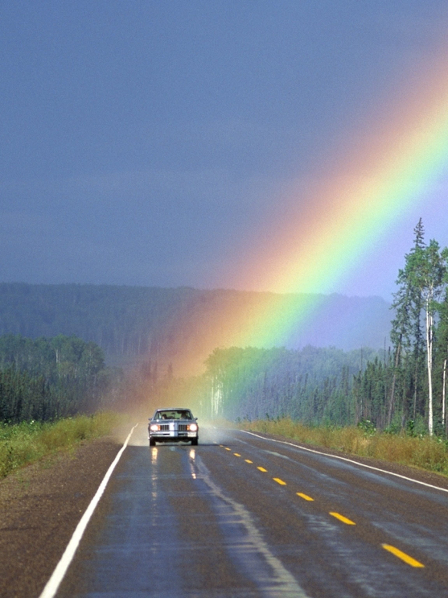

Unicorns & Rainbows website
- Home
- About Me
- Rainbows
- Contact

Welcome to my website about Unicorns & Rainbows!
You are the
th visitor to this site!
|  | |
 |
God Save the Queen! R.I.P. Elizabeth II
A double rainbow shimmered across the crowds gathered outside Buckingham Palace. When the news of Queen Elizabeth II's death broke, after a hush, people broke into "God Save the Queen." https://t.co/XgIbaYjsEL pic.twitter.com/g0Q3ZDsNuv
— The New York Times (@nytimes) September 8, 2022